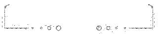

使用小程序
对于大多数人而言，学完嵌入式还是要面临着就业，可能只有极少的人选择创业，但你了解嵌入式行业的7种公司吗?在选择应聘企业的时以可以先了解这些，对于你个人的成长空间、职业发展而言都是一个比较实用的小知识。
1. 研究类机构
这类机构很多都很轻松，研究成果也不一定能转化为成果，挣钱靠资历，刚毕业薪水一般不高，打拼基本没用。不过很适合不想竞争，但是想深入研究一些课题的人。
2. 小的芯片设计公司
这类公司往往只需要你有能力解决某些问题，对时间要求不是很紧，产品开发周期长，有大量的时间供你研究某项技术，薪水起点较高。这类公司一边接触市场，一边接触最前沿的科技，确实对学习嵌入式技术很有效，但是同样，对人的要求就高了。
3. 芯片设计公司的技术部门
这部分要单提出来，因为很多国外或者台湾的IC公司，在大陆设立了技术支持部门，但是这些部门的人并不能接触到核心的技术，甚至有些公司连源码都看不到，这比下游的厂商来说，唯一有优势的地方就是最先得到本公司的培训和技术资料，关于本公司芯片的应用技术非常精通，其他也没什么。不过还是有很多公司的FAE可以和研发一起工作的，这些就另当别论了。再说其他，薪水自然没有芯片设计的高，不过工作强度却不小，毕竟和客户打交道。
4. 方案公司
这类公司可以和上面说的芯片设计公司的技术支持部门等同，但是在技术上，接触的东西要广的多。一般会接触到10家左右芯片公司的产品，并且能够设计到很多产品功能的设计。如果没有能力进入芯片公司做设计，在这类公司做也是不错的选择。这类公司的薪水差别都比较大，有高有低，工作强度不会小。
5. 方案二次开发公司
这类公司普遍的特点就是小，大的也超不过七八十。工作简单，往往就是修改UI，修改模块，改个语言什么的。而且与工厂配合密切，这意味着你的工作时间基本上是无法确定的，工厂有订单，你就得加班，最主要的是，工厂一般周末不休息。。。薪水不高，个别水平很高的可以做老板的合伙人，这是唯一比较有诱惑的地方。
6. 有研发能力的公司
这类的公司工厂有很多，有研发能力很强的，不用说如今智能时代的产品公司非常多，如：华为、中兴、乐视、小米、华硕等等自己的产品全部是自己研发，这些和自己开发Solution的方案公司很像，也不过，只是工作时间要长一些，毕竟和工厂打交道。还有刚开始建立研发部门的，这类一般是老板开工厂赚到钱了，想转型。后者就比较危险，很多转型不成功的情况，老板都会把研发部门裁掉，然后继续做工厂。技术上来说，前者可以学到很多东西，后者要求有比较好的领悟力和自学能力，毕竟一般没有人教你。至于薪水，前者还不错，后者看老板的魄力，不过后者因为长期雇佣工人，一般不会太舍得钱给一般员工，除非你去了做研发部的头。
切忌不要去这种公司--完全接收研发成果的工厂司
这类基本学不到什么，基本就是烧录软件，发发邮件，指导指导产线，完事。千万不要干这样的活，对于进入嵌入式行业基本无用。因为工作性质，薪水自然也很低。
信息部 白金朋
